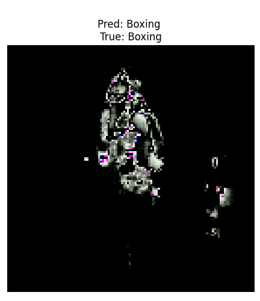
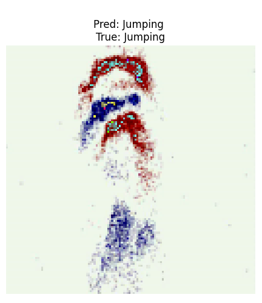

Event-Based Few-Shot Learning Human Activity Recognition
Kalman Filter and Particle Filter Tracking on ROAD-UAE KU Dataset
Author: Mohammad Belal Irshaid
Department: Mechanical and Nuclear Engineering, Khalifa University
Kalman Filter Tracking
Particle Filter Tracking
Event-Based Few-Shot Learning Human Activity Recognition
Event-Based Few-Shot Learning (FSL) for Human Activity Recognition
Author: Mohammad Belal Irshaid
Department: Mechanical and Nuclear Engineering, Khalifa University
Project Overview
This project focuses on the recognition of fine-grained human activities using Few-Shot Learning (FSL)
combined with neuromorphic sensing technology. By leveraging a Dynamic Vision Sensor (DVS), real-time
event-based data streams are captured, which represent changes in visual scenes rather than traditional
frame-based data. This enables highly efficient and low-latency recognition of human activities.
The core of this project is built upon Prototypical Networks, a metric-based learning approach, which allows
the system to classify human activities with minimal labeled data. The framework addresses the challenge of
catastrophic forgetting—where new information overwrites previous knowledge—by preserving support prototypes
and regularizing feature spaces.
The ultimate goal of this project is to provide robust, scalable, and low-data-requirement solutions for
real-time applications in fields such as:
Robotics: For autonomous systems to adapt to human behaviors in real-time.
Surveillance and Security: Efficient detection of human activities in sensitive
environments with minimal training data.
Healthcare: For monitoring patient activities and ensuring safety in medical
facilities.
Smart Environments: Providing real-time activity recognition for smart homes,
factories, and public spaces.
Methodology
Data Acquisition:
Data is collected using a neuromorphic DVS camera that outputs event-based data instead of conventional
frames. Integrated into the ROS2 (Robot Operating System 2) framework, this setup allows the streaming
of high-temporal-resolution events, which are then used for human activity recognition tasks such as
walking, jumping, and boxing.
Event Extraction and Video Conversion:
The event data from the DVS is extracted from ROS2 topics and converted into traditional video frames.
These frames serve as input for the classification model. The conversion process involves handling raw
event streams and transforming them into a video format suitable for machine learning models.
Few-Shot Learning Framework:
The Prototypical Networks model is used for activity classification by leveraging metric-based learning.
It computes prototype vectors for each class by averaging the embeddings of the support examples. The
query samples are classified based on the Euclidean distance between their embeddings and these
prototype vectors.
Mitigating Catastrophic Forgetting:
To prevent the system from forgetting previously learned classes when introduced to new ones, the
framework implements several strategies:
Prototype Preservation: Retaining support prototypes throughout training and
evaluation to ensure class-specific knowledge is maintained.
Feature Space Regularization: Preventing distortions in the embedding space,
which could otherwise lead to misclassification.
Balanced Query Updates: Gradual integration of new query information without
disrupting previously acquired knowledge.
Training and Fine-Tuning:
Training involves computing class prototypes using a convolutional feature extractor (based on
ResNet18), followed by classification using Euclidean distance. Fine-tuning is performed on query data
to improve accuracy on unseen examples.
Evaluation:
The model is evaluated under different shot settings (5-shot, 10-shot, 20-shot) to test its accuracy and
generalization. Support and query accuracies are measured to ensure robustness in both high- and
low-shot scenarios.
Events Extraction using DVS
Watch the video for events corresponding to three activities captured using DVS:
Results
The system demonstrates high accuracy in 20-shot scenarios and struggles with low-shot cases like 5-shot
"Walking". The following table summarizes classification accuracy:
Scenario
Support Accuracy (%)
Query Accuracy (%)
5-shot Boxing
56.15
20.00
5-shot Walking
57.68
0.00
5-shot Jumping
55.94
40.00
10-shot Jumping
63.50
70.00
10-shot Boxing
50.54
30.00
10-shot Walking
52.29
50.00
20-shot Walking
57.68
50.00
20-shot Jumping
49.17
95.00
20-shot Boxing
68.95
80.00
Figures
The following figures are described in the PDF report:
Figure 1: Boxing Recognition Example

Figure 2: Walking Recognition Example
Figure 3: Jumping Recognition Example

Demonstration Video
Watch the video demonstration of human activity recognition: